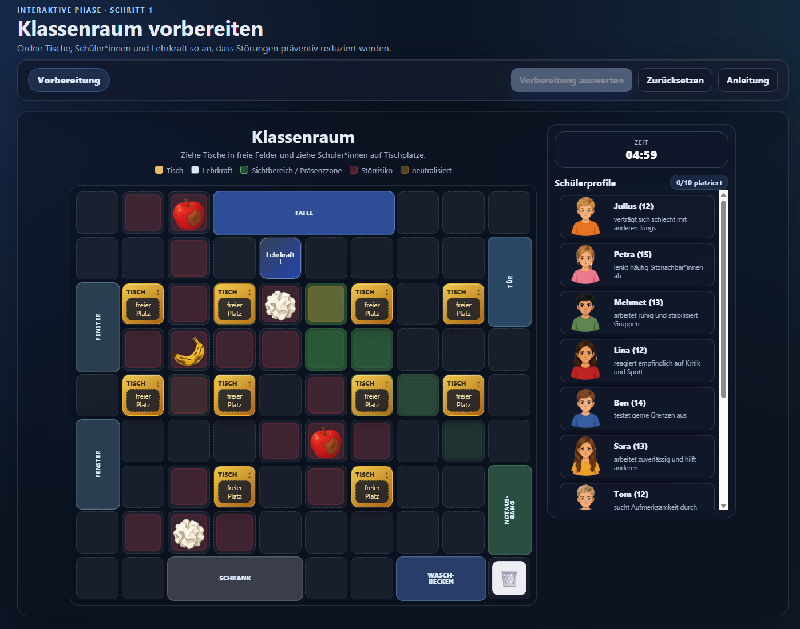
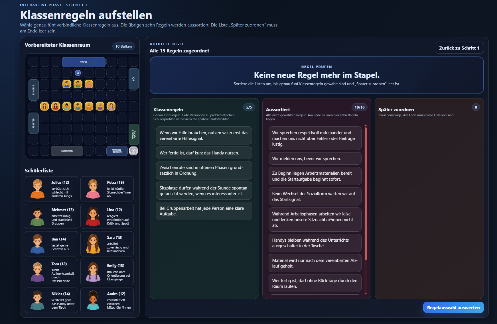
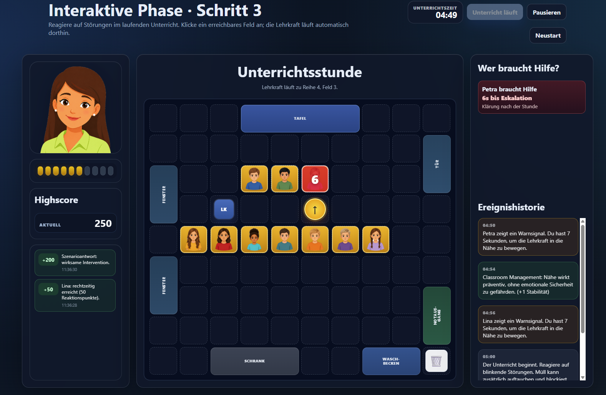

Klassenraum vorbereiten
Du ordnest Tische, Schüler*innen und Lehrkraft so an, dass Störungen präventiv reduziert und stabile Arbeitsbedingungen geschaffen werden.
Classroom Management · kooperative Verhaltensmodifikation
Ein Spiel, in dem Classroom Management als präventive Maßnahme genutzt wird, um Unterricht zu strukturieren, Störungen vorzubeugen und bei auftretenden Störmustern mit kooperativer Verhaltensmodifikation professionell zu intervenieren.

Du ordnest Tische, Schüler*innen und Lehrkraft so an, dass Störungen präventiv reduziert und stabile Arbeitsbedingungen geschaffen werden.

Du wählst Regeln aus, die zu den konkreten Schülerprofilen passen und den Unterricht präventiv strukturieren.

Du reagierst im laufenden Unterricht auf Störungen, bewegst die Lehrkraft gezielt und triffst passende pädagogische Entscheidungen.